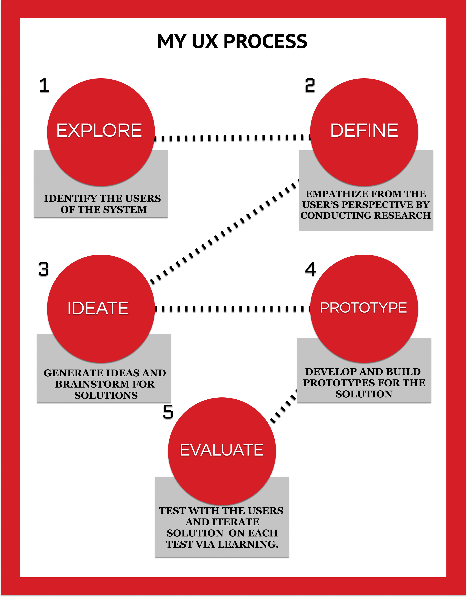

B-AID : An assistive device for individuals who are blind
PROJECT INFORMATION
- Categories: Accessibility, Mobile Technology, User-Centered Design
- User Base: Runners who are blind
- Project Timeline: 1 year
- Team Members: Solo Project
- My Role: UX researcher and UX designer
Introduction
According to the WHO website, globally, it is estimated that at least 2.2 billion people have a vision impairment or blindness, of whom at least 1 billion have a vision impairment that could have been prevented or has yet to be addressed. The number of individuals who are blind, using technology to assist them, are relatively few in numbers as compared to the total number. These technologies include mobile applications, smart walking sticks, voice assistants, and so on.,
The Problem
Given that individuals who are blind are so accustomed to the white cane, How can an application help in solving some of the overarching issues related to navigation that persist in their lives instead of them accessing different applications concurrently?
Assumptions
To get my process clear, I made a bunch of assumptions. I assumed that people have a smartphone at the very basic. I also assumed that they use their phone for navigation from one place to another. In addition to that, I also assumed that they have access to video. My last assumption was that they have used other mobile applications before related to navigation.
Some Basic Questions
Who are the users?
Individuals with vision loss, capable of using a mobile phone.
What problem are we solving?
Providing solutions in a single application
How are we solving the problem?
I followed a 5 step process to get to the solution in terms of a mobile appliation redesign.
The Process
Define, Empatize and Research
Having understood who my users are, I began collecting data and drawing insights.
Product Analysis
Mobile Applications Looked at
To get a feel of what they feel like when they wear devices while moving from one place to another, we decided explore some of the devices thoroughly.

User Interviews

Participants Interviewed
I would like the mobile application to tell me about the position of the bus stops, traffic in the area and so on..
I use google maps a lot. I also use Lazarillo to help me within the walls of the city. I like applications where the functions are easily visible
Field Observations
I travelled to blind schools to observe the individuals in a natural space, taking down notes, combining the information obtained with the interviews to draw insights.
Empathy Map and User Persona

I came up with an empathy map to understand and prioritize the user's needs. I put this step as a forward to the user interviews. By taking one of the participants from the interview as a stand point, the empathy map was created.
Among the other things, they want to see applications that give them the presence of sidewalks, the positioning of intersections, an emergency assistance button, and a scanner of handwritten data. Additionally, several application-specific pointers were noted down and eventually referenced to a User Persona to get an idea of how the application will be shaped in the future..

Story Boards


Storyboards changed my perception of the functionalities that can be implemented in my project. I realized that my application cannot have all the functionalities that I desire because of constraints indicated by the storyboards. The storyboards helped me synthesize the content and match my thinking with the constraints.
IDEATING
Having obtained the data, I am now looking at drawing themes and prioritizing them.
Affinity Mapping

The Affinity diagram helped me structure my thoughts and organize the content.
❗ Importance of Progressive Disclosure
I am extremely mindful to employ progressive disclosure. Given that we are dealing with individuals who are blind, we really cannot push too much information on a single screen. The content has to be relatively easy to identify and understand. Progressive Disclosure would allow me to push all the information that was not necessary to screens at the back that would only appear when needed. (Based on the functionalities presented to the user.)
Design
Starting with the Pen and Paper Sketches for low fidelity, Balsamiq Mockups for medium fidelity, and Adobe XD for high fidelity mockups, I went in stages.
Pen - Paper Sketches

I love to put my thoughts on paper so I decided to go ahead with the pen-paper route. Anything that comes to my mind has to hit the white sheet first.
Wireframing
I used Balsamiq Mockups to generate the wireframes of the skeletal structure of the application. Balsamiq Mockups is a great tool with a low learnability curve and relative ease of use.
Main Screen

This is the main page and is a key component in the application. It has 3 pivotal functions
Ask for Assistance , Connect to Maps , Video Assistance
Function Screens #1

Function Screen #2

Prototype
Adobe XD was the tool used and I also used voice feature given by the tool to do the same.

To take a look at the prototype, click Here
The Impact of the design
What can we expect from the pror
IMPACT
From the insights and the prototype developed, I am confident that- A greater number of people will be helped with the application
- More people would volunteer to use the application
- An application that can be a proper substitute in the market for the solitary applications like AIRA/Be My Eyes
- More individuals who are blind, connected to technology
Takeaways
From trying to empathize with the blind community to putting all my might behind making a prototype that is accessible to them, I have come a long way. I feel that the project has made me a stronger person mentally. I was skeptical at the beginning of the project, but as time progressed, the belief instilled in me by the community made me realize how we are gifted to have everything at our disposal and use it with so much ease. Along the way, I faced innumerable challenges. Everyone I spoke to had an opinion and a design idea. I went with my instincts, tried being in the shoes of a blind person, empathizing with them. This helped me understand and develop a novel idea for the application. I went with the idea that connecting people on the app is similar to what happens in rideshare, and I hope that one day, even if my prototype does not hit the market, it stands as an inspiration for many designs to come.